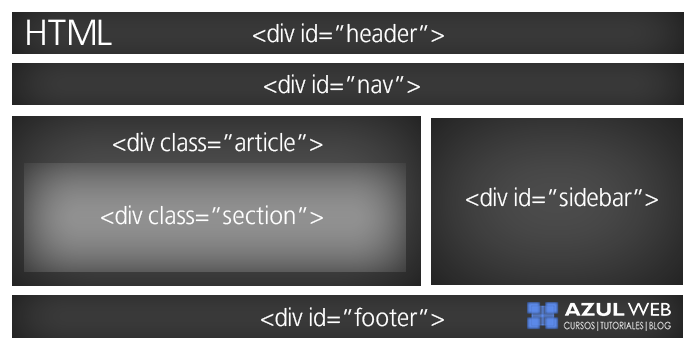
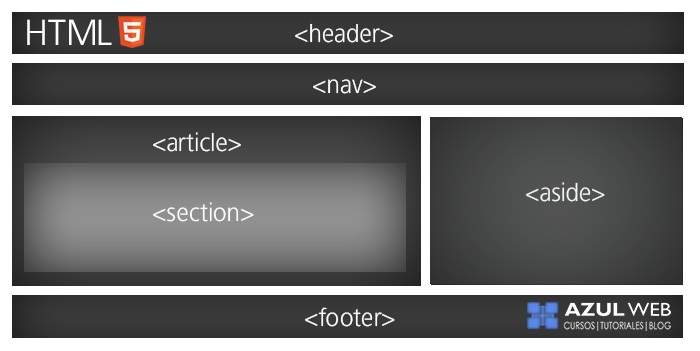

Para entender la estructura basica de HTML5, primero hay que conocer las etiquetas introducidas por el estandar HTML5
El lenguaje HTML funciona a través de marcas de sentido llamadas etiquetas. Las etiquetas son la herramienta fundamental para que los navegadores puedan interpretar el código y permitirnos ver imágenes, texto, párrafo, y estructuras. Los navegadores vendrían a ser como “traductores” de las etiquetas, y con HTML5, se agregan nuevas etiquetas para utilizar que nos ahorran el uso de otros productos que se usaban para complementar y hacer cosas que con el simple HTML no se podían hacer. HTML5 fue creado para hacer que el proceso de escribir el código sea más simple y más lógico, por decirlo de una forma. La sintaxis de HTML5 se destaca, como dijimos, en el ámbito multimedia, pero son bastantes las etiquetas introducidas para generar una mejoría.
La idea detrás de HTML5 es que podamos visualizar el contenido multimedia variado que podemos encontrar en internet aún cuando nos encontramos en dispositivos de gama baja que no podrían soportarlo cuando tienen que instalar infinidad de plug-ins. No solamente contamos con etiquetas especiales como audio, video y canvas, sino también integración con contenidos de gráficos en vectores (que anteriormente se conocía como la etiqueta object. Con estas etiquetas, los usuarios pueden consumir videos y canciones, por ejemplo, sin necesidad de instalar nada de forma adicional.
Las más importantes de las nuevas etiquetas creadas son:
anteriormente la estrucutra HTML se basaba en cajas de contenido llamadas div donde para diferenciar una de otras se utilizaban id o un class.
Con la llegada de HTML5 la estructura basica para desarrollar una pagina web pasa a ser mas declarativa, con las etiquetas que ya vimos anteriormente, teniendo un resultado como el siguiente
